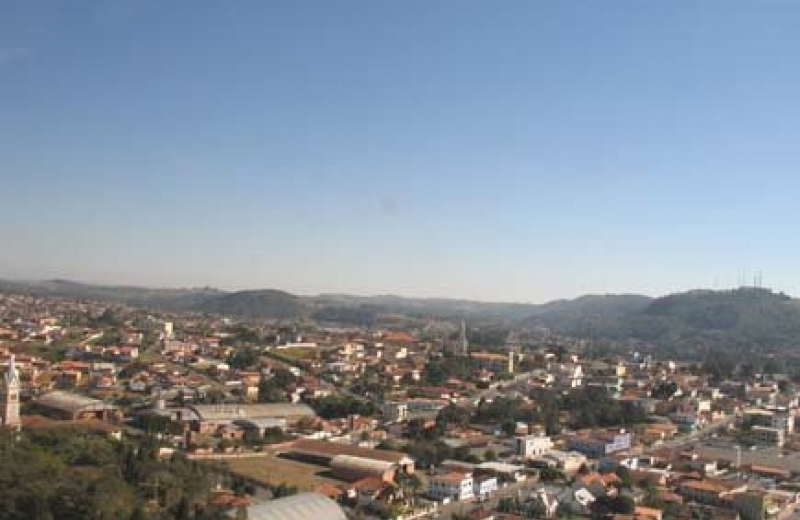
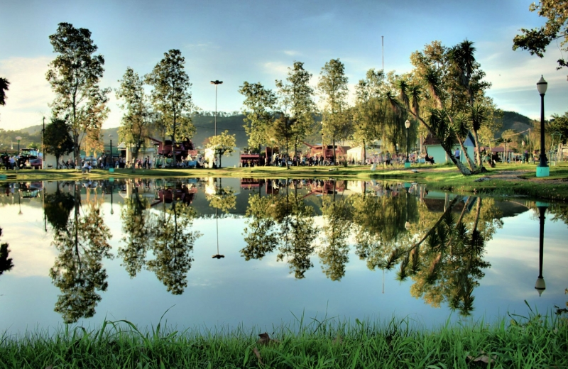
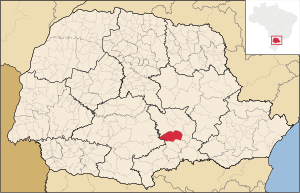
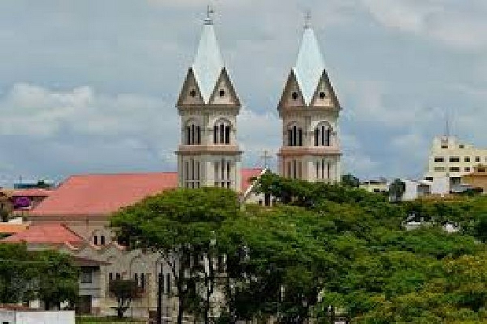
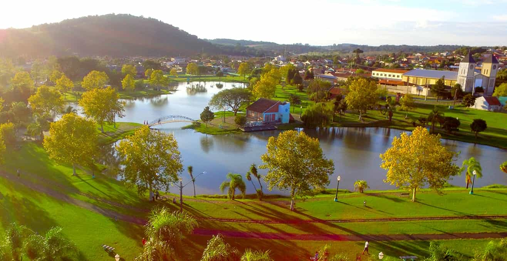
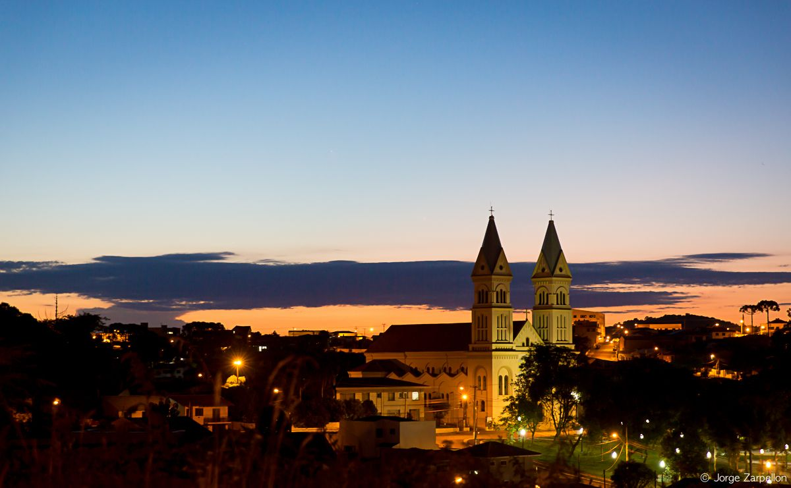
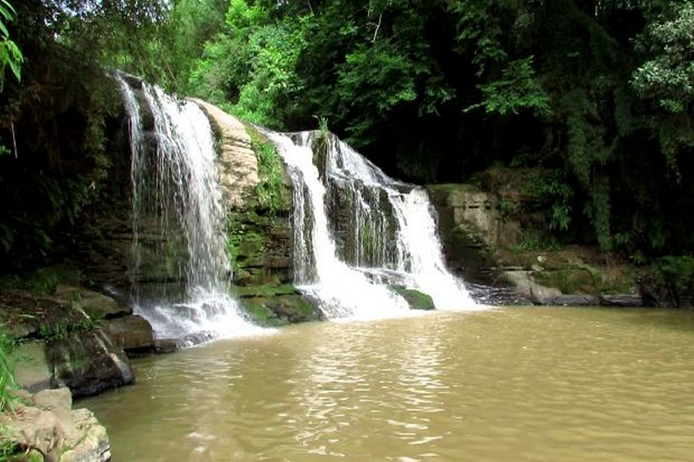
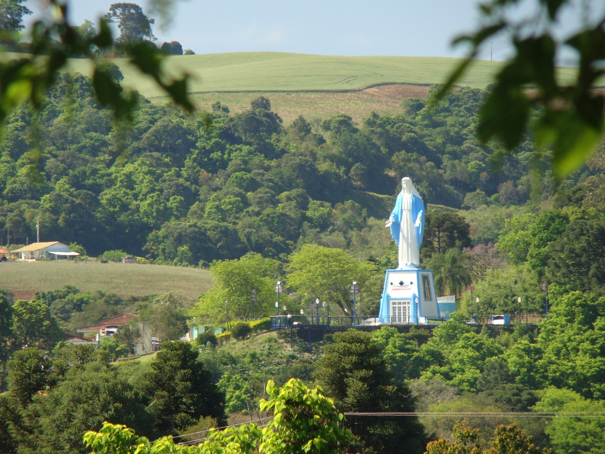

Irati teve sua origem na vila de "Covalzinho". Na década de 1890, quando os trilhos da Estrada de Ferro São Paulo/Rio Grande do Sul passaram pela vila, foi ali instalada uma estação ferroviária que recebeu o nome de "Iraty". Isso fez a vila crescer e se tornar importante. Posteriormente, o nome Covalzinho acabou sendo lentamente esquecido, ficando a vila conhecida apenas pelo nome da estação ferroviária. Em 15 de julho de 1907, já elevada a distrito, teve sua emancipação política decretada, desmembrando-se do município de Imbituva. O movimento foi liderado pelo Coronel Emílio Baptista Gomes, que veio a se tornar o primeiro prefeito do município.
Os primeiros desbravadores chegaram por volta de 1829, eram eles, Pacífico de Souza Borges e Cipriano Francisco Ferraz, dois moradores que residiam onde hoje se denomina Teixeira Soares, levaram quinze dias para conhecer o lugar e então retornaram para casa. A região onde hoje é Irati, pertencia aos índios Caingangues, ramo dos tupis, daí a origem de seu nome Ira, que significa mel e, ty, rio, ou seja, rio de mel, que foi escolhido, por volta de 1829 e 1830. (Orreda, 1981).
Irati era a denominação de onde atualmente é a Vila São João, e a região central era chamada de Covalzinho. As primeiras famílias que residiam em Irati, depois Irati-Velho e hoje Vila São João, teriam vindo de Palmeira, Imbituva, Lapa, Itaicoca, Assungui (hoje Cerro Azul), Campo Largo e Curitiba, a partir de 1909 em diferentes períodos da imigração chegam a cidade diferentes levas de imigrantes holandeses, ucranianos, alemães, italianos e poloneses que se estabeleceram onde hoje é o bairro Itapará. Cada etnia é responsável por parte da cultura local e suas influências podem ser vistos na culinária, dança, arquitetura e artesanato, assim como características distintas na população.
Inicialmente a cidade era distrito de Imbituva, os moradores tinham que passar por caminhos difíceis para pode resolver situações judiciais e pagar impostos, em 1907 começa um movimento pela autonomia do distrito, conquistada no 2 de Abril do mesmo ano, sendo assim Irati emancipou-se de Imbituva em 1907 e foi instalada em 15 de julho. A primeira sede da Prefeitura foi inaugurada em 1907. O prédio, em madeira, localizado à Rua 15 de Julho, entre as ruas Alfredo Bufrem e Coronel Emílio Gomes, funcionou até os anos 20, o prefeito na época era Emílio Baptista Gomes.
Em 1927, na gestão do prefeito Zeferino Sales Bittencourt, foi inaugurado o prédio em alvenaria, na Rua Coronel Emílio Gomes, a edificação existe até hoje, e é utilizada pelo Corpo de Bombeiros de Irati. Atualmente, a sede da Prefeitura de Irati localiza-se em frente a antiga sede da Rua Coronel Emilio Gomes, e foi inaugurada em 1963 na gestão do prefeito Edgard Andrade Gomes. (Orreda, 1981).
De acordo com o IBGE, o distrito foi criado com a denominação de Irati, por Lei municipal de 25 de fevereiro de 1903, subordinado ao município de Santo Antônio de Imbituva, tendo sua emancipação em 15 de julho de 1907. Em divisão territorial datada de 01 de julho de 1960 o município é constituído de 04 distritos: Irati, Gonçalves Junior, Guamirim e Itapará. (IPARDES, 2020).
Área Área territorial: 1000,004km²
Fonte: IPARDES, 2020
Irati é um município do estado do Paraná que pertence a Mesorregião Geográfica Sudeste Paranaense e da Microrregião de Irati. (IPARDES, 2020). Irati faz divisa com os seguintes municípios, ao norte com Imbituva e Prudentópolis, ao Sul com Rio Azul e Rebouças, no leste com Fernandes Pinheiro e oeste com Inácio Martins.
População Estimada 2019: 60.727 habitantes
Fonte: IBGE, 2020. População Urbana Estimada– 44.932 População Rural Estimada – 11.275
Fonte: IBGE, 2010
Altitude (metros): 836 Latitude 25 º 28 ' 02 '' S Longitude 50 º 39 ' 04 '' W Fonte: IBGE, 2020
Irati está localizado sobre a Bacia Sedimentar do Paraná, que é uma enorme depressão no sul do Brasil, onde se depositaram sedimentos e derrames de lava, que formaram rochas ao longo de cerca de 400 milhões de anos. A Formação Irati é de idade Permiano Superior. Geologicamente o solo pertence ao Permiano Carbonífero, com topografia marcada por encostas suaves a intermediárias, encostas íngremes, vertentes retilíneas, topos planos, solos acinzentados ou vermelhos ao Norte e castanhos ao Sul.
A Formação Irati, é composta por siltitos, argilitos e folhelhos sílticos de cor cinza clara a escura, folhelhos pirobetuminosos, localmente em alternância rítmica com calcários creme silicificados e restritos níveis conglomeráticos, foi depositada no que era na época, entre 250 e 270 milhões de anos, um golfo do antigo supercontinente Gondwana aberto para o então Oceano Panthalassa.
As rochas sedimentares se originaram em diferentes ambientes, como marinho costeiro, marinho profundo, glacial e até mesmo desértico. Com a separação dos continentes, uma imensa quantidade de magma extravasou e cobriu estas rochas. O material resfriado formou o basalto e o magma consolidado em fraturas deu origem a diques e soleiras de diabásio, comuns no município de Irati. As rochas da Formação Irati são de aproximadamente 285 milhões de anos atrás, no permiano recente, ou seja, há 60 milhões de anos antes do aparecimento dos dinossauros. Durante o Período Permiano é notável que os animais dominantes foram os répteis e anfíbios. O “Mesosaurus brasiliensis” era provavelmente o mais importante réptil e é o mais importante fóssil da Formação Irati, encontrado na região sul do Brasil – especialmente na de Irati - e África do Sul.
O ecossistema que compõe a região de Irati é a Floresta Ombrófila Mista, ou seja, que necessita nas fases iniciais de crescimento, de umidade e sombra. A composição vegetal do município divide-se nos estágios: inicial (capoeira, vassourinha, etc.); médio (capoeirão, florestas em formação); avançado (reflorestamento; agricultura, pastagem e outros, florestas formadas). As principais espécies nativas são: Araucária; Imbuia; Erva-mate; Bracatinga; Cedro. Recente estudo apresentado no Centenário de Irati por Daniel Saueressig, pesquisador da área de Dendrologia, apontou a presença de 174 especies arbóreas autóctonas em Irati. As famílias Myrtaceae (30 espécies), Fabaceae (17), Lauraceae (15), Euphorbiaceae (10), Solanaceae (9), Asteraceae e Salicaceae (8), Aquifoliaceae e Sapindaceae (5) e Meliaceae (4), apresentaram uma maior riqueza florística e juntas representam 63,79% das espécies registradas. Segundo o mesmo autor, as espécies Calyptranthes grandifolia, Neomitranthes 17 | P á g i n a gemballae e Tetrorchidium rubrivenium apresentam baixa frequência e podem ser consideradas espécies raras na área do município. Quanto a fauna da Floresta Ombrófila Mista, podem ser encontrados roedores (ratos, cutias e pacas), aves ameaçadas de extinção como a gralha-azul e o papagaio- de-peito[1]roxo, além de inúmeros insetos. A semente da araucária, o pinhão, é muito apreciada pela fauna em geral e se constitui numa fonte de alimento essencial para o seu sustento.
O município de Irati está localizado na Bacia hidrográfica do Rio Paraná, sendo que a rede de drenagem que banha o município divide-se em duas vergências. Para sudoeste, fazendo parte da bacia do Rio Iguaçu existem os rios Preto, Riozinho, Mato Queimado, Imbituvinha, Taquari, Guamirim, Corrente, Campinas, Cachoeira e Caçador, que terminam por desaguar no Rio Potinga, afluente da margem direita do Iguaçu. Com vergência para o norte e fazendo parte da bacia do Rio Ivaí, existem os rios Valeiros, Linha B, Guabiroba, dos Patos, dos Cochos, dos Antónios, do Couro, Canhadão, das Antas, da Prata, do Cobre, da Areia, Caratuva, Bonito e Barreiro. Entre os cursos d'água, destacam-se o rio dos Patos, Caratuva, das Antas, Preto e Riozinho.
Segundo a classificação climática de Köppen, o clima de Irati é temperado, apresentando verões amenos, invernos com ocorrências de geadas severas e frequentes, não apresentando estação seca, com uma amplitude térmica média e significativa. Segundo o Instituto Nacional de Meteorologia (INMET), desde 1966 a menor temperatura registrada em Irati (estação convencional) foi de -7,2 °C em 18 de julho de 1975, e a maior atingiu 34,6 °C em 11 de março de 2005. O município apresenta uma variação média, em que o mês mais chuvoso é janeiro, e o mês menos chuvoso, é agosto, sendo que o maior acumulado de precipitação em 24 horas foi de 175 mm em 8 de junho de 2014. (ANDRADE, A. R.; ROSEGHINI, W.F.F.; MENDONÇA, F. A;. 2010, p.66).
A pirâmide etária, segundo o último censo do IBGE em 2010, mostra que Irati possui uma população em sua maioria adultos entre 15 a 59 anos, em 2017, o salário médio mensal da população econômica ativa era de 2.2 salários mínimos. A proporção de pessoas ocupadas em relação à população total era de 22.6%. Considerando domicílios com rendimentos mensais de até meio salário mínimo por pessoa, tinha 32.6% da população nessas condições. (IBGE, 2020).
O Produto Interno Produto (PIB) que representa a soma do que foi produzido em um município durante determinado período de tempo, possuem valores que demonstram a capacidade competitiva das economias municipais, bem como sua composição setorial, o PIB per capita de Irati é de R$ 29.692,43 (Vinte e nove mil seiscentos e noventa e dois reais e quarenta e três centavos). (IBGE, 2020).
O município de Irati tem como a principal atividade econômica o comércio em geral e a prestação de serviços, logo após vem a agropecuária, sendo dividida em bovinos, equinos, galináceos, ovinos, suínos, seguido da agricultura, com o cultivo de soja, tabaco e feijão. (IPARDES, 2020).
(Fonte: Inventário da Oferta Turística de Irati - 2020) 